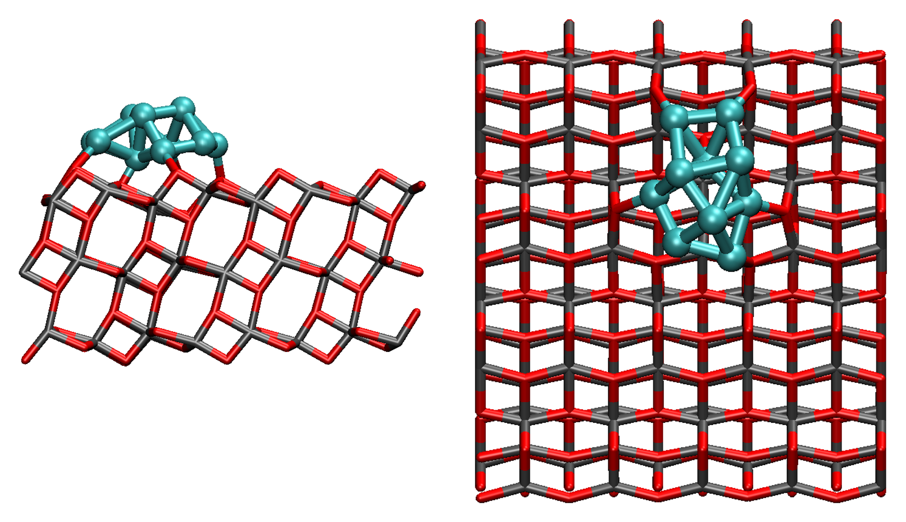

Computational chemistry, KU Leuven
Catalysis at complex interfaces
Most of my work lands there. The methods travel further: electronic structure, dynamics, free energies, kinetics and machine-learned potentials.

From structures to rate constants
Most projects walk this loop. Which methods I reach for changes with the problem, but the shape of the work does not.
A catalyst is a population, not a structure
Most computational catalysis starts from a single well-defined model: one cluster, one facet, one adsorption site. Real catalysts under working conditions are not like that. They change oxidation state, restructure, pick up hydroxyls and water, sinter, and sometimes dissolve into the medium that is supposed to be the reactant.
My work treats that population as the object of study rather than an inconvenience. In practice this means combining periodic and molecular electronic structure with free-energy methods that can afford real sampling: metadynamics and OPES, QM/MM free-energy perturbation, resampling estimators, and more recently machine-learned interatomic potentials fine-tuned for the specific chemistry in hand.
I did my PhD with Carine Michel at the ENS de Lyon on ruthenium clusters supported on titania, and I am now a postdoc with Jeremy Harvey at KU Leuven, working on mechanism and kinetics in catalysis. A recurring thread through both is collaboration with experimental groups, where the computation has to answer a question someone is actually measuring.
- Position
- Postdoctoral researcher, Department of Chemistry, KU Leuven
- Group
- Quantum and physical chemistry, Prof. Jeremy Harvey
- PhD
- ENS de Lyon, 2025, with Dr Carine Michel
- ORCID
- 0000-0002-8279-3010
- joshua.sims@kuleuven.be
Research
Four threads, all pointed at the same problem: making computed chemistry correspond to the catalyst that is really there.
-
01
Speciation of supported metals
What a supported metal catalyst is made of under reaction conditions: cluster size and shape, oxidation state, the role of support defects, and how all of it shifts with temperature and coverage. -
02
Solvation and reactivity at interfaces
Solvent is rarely a spectator. I compute adsorption and reaction free energies in explicit solvent, where the ordering of water at an oxide surface can decide the outcome. -
03
Mechanism and kinetics
Turning computed energetics into something falsifiable: transition states, micro-kinetic models, degree of rate control, and spin-forbidden steps in transition-metal chemistry. -
04
Machine-learned potentials for catalysis
Foundation models make the sampling above affordable, but they are trained on chemistry that is not this chemistry. I work on where they fail for open-shell transition-metal systems, and on fine-tuning them so they do not.
Selected publications
Six peer-reviewed articles, all open access through the publisher or a repository.
2025
Hydration of hexafluoroacetone on ice
2024
Strong substrate-adsorbate interactions direct the impact of fluorinated N-heterocyclic carbene monolayers on Au surface properties
Recent
-
2026
Tier-1 pilot project on Sofia
Awarded a pilot project on Sofia, the new Flemish national supercomputer, following a Tier-1 starter allocation of 500,000 core-hours on Hortense. -
2025
Started at KU Leuven
Joined the group of Prof. Jeremy Harvey as a postdoctoral researcher in October, working on mechanism and kinetics in computational catalysis. -
2025
PhD defended at the ENS de Lyon
Defended in July, unconditionally. Thesis: morphology and surface state of a Ru/TiO2 catalyst, supervised by Dr Carine Michel. -
2025
Oxygen vacancies paper out in PCCP
First-author study of how support defects reshape sub-nanometre Ru clusters, with a preprint on ChemRxiv.